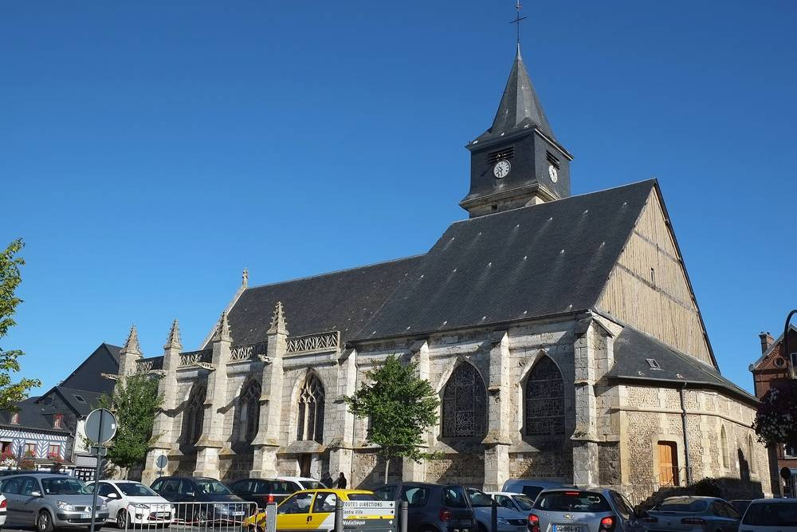

프랑스 노르망디 뵈즈빌, 학교 2곳·급식실 가스 난방을 지역 목재 칩 바이오매스로…80만 유로 들여 해마다 약 3만 유로 절감 기대

인구 4,700명 소도시, 잦은 보일러 고장·가스값 급등에 전환 결정…10월 29일 보일러실 첫 모듈 설치, 이번 겨울 끝 무렵 학교 열망의 가스 비중 10%로
프랑스 노르망디 외르 데파르트망의 소도시 뵈즈빌(Beuzeville)이 학교 2곳과 학교 급식실의 난방을 천연가스에서 지역 목재 칩을 때는 바이오매스 보일러로 바꾼다. 인구 4,700명인 이 시는 10월 29일 새 보일러실의 첫 콘크리트 모듈(55톤)을 크레인으로 앉혔고, 이번 겨울이 끝날 무렵 전환을 마칠 계획이다. 사업비 80만 유로는 노르망디 레지옹과 시, 국가 '열 기금(Fonds chaleur)'이 나눠 내며, 시는 해마다 약 3만 유로를 아낄 것으로 내다봤다. 그동안 100% 가스로 데우던 학교 열망은 가스 비중이 10%로 줄고, 연료는 노르망디 목재 업체에서 나온 부산물을 잘게 부순 칩으로 한 해 20차례 안팎 트럭으로 들여온다. 시는 보일러가 자주 고장 나 겨울에 교실이 춥기도 하고 요금도 계속 오르자 에너지 진단을 맡긴 뒤 바이오매스를 골랐으며, 1946년 세워진 외르 전기·가스 시군 공동조합과 함께 사업을 추진했다. 토마 엘렉사우제르(Thomas Elexhauser) 시장은 가스값 급등과 국제 위기로 가스에는 "재정적 위험"이 있었다고 말했고, 노르망디 운영사 비리아(Viria)는 보일러에 미세먼지 필터를 단다고 설명했다.
시민에너지 관점
오스트리아 농촌에서는 오래전부터 농민들이 협동조합을 꾸려 자기 숲에서 나온 목재 칩으로 마을 학교·관공서·주택에 열을 대는 바이오매스 열공급 시설을 운영해 왔고, 주민이 낸 난방비는 연료를 대는 이웃 농가의 소득으로 돌아갔다. 뵈즈빌이 80만 유로로 학교 난방의 90%를 지역 목재로 바꿔 해마다 약 3만 유로를 아끼겠다는 것은, 가스값이 오르내릴 때마다 흔들리던 공공 난방비를 지역 안에 붙잡아 두는 길이다. 나무를 때면 대기오염이 늘지 않느냐는 걱정이 있지만, 버려지던 목재 부산물을 쓰고 미세먼지 필터를 다는 방식이라면 그 걱정을 줄이면서 연료비도 지역 업체에 남길 수 있다. 우리도 학교·면사무소 같은 농산어촌 공공건물 난방을 바꿀 때 지자체 설비 교체에서 그치지 말고, 산림 부산물을 대는 임업인과 주민이 함께 소유하는 열공급 협동조합을 지원 대상에 넣어야 한다.
출처: France 3 Régions (Normandie) 2026-11-02 Sylvie Callier 원문 보기
仏ノルマンディーのブーズヴィル、学校2校と給食室のガス暖房を地元の木質チップのバイオマスに…80万ユーロを投じ年約3万ユーロの節約見込み
人口4,700人の小さな町、ボイラーの度重なる故障とガス価格高騰で転換を決定…10月29日にボイラー室の最初のモジュールを設置、今冬の終わりには学校の熱供給網のガス比率を10%に
フランス・ノルマンディー地方ウール県の小さな町ブーズヴィル（Beuzeville）が、学校2校と学校給食室の暖房を天然ガスから地元の木質チップを燃やすバイオマスボイラーに切り替える。人口4,700人のこの町は10月29日、新しいボイラー室の最初のコンクリートモジュール（55トン）をクレーンで据え付け、今冬の終わりごろに転換を終える予定だ。事業費80万ユーロはノルマンディー地域圏と町、国の「熱基金（Fonds chaleur）」が分担し、町は毎年約3万ユーロを節約できると見込んでいる。これまで100％ガスで暖めていた学校の熱供給網はガスの比率が10％に下がり、燃料はノルマンディーの木材企業から出る副産物を砕いたチップを、年20回前後トラックで搬入する。町はボイラーが頻繁に故障して冬に教室が寒いこともあり、料金も上がり続けたため、エネルギー診断を依頼したうえでバイオマスを選び、1946年に設立されたウール県電力・ガス広域事務組合とともに事業を進めた。トマ・エレクサウゼール（Thomas Elexhauser）町長は、価格高騰や国際的な危機でガスには「財政的なリスク」があったと述べ、ノルマンディーの運営会社ヴィリア（Viria）はボイラーに微粒子フィルターを付けると説明した。
市民エネルギーの視点
オーストリアの農村では古くから、農家が協同組合をつくり、自分たちの森から出る木質チップで村の学校や役場、住宅に熱を送るバイオマス熱供給施設を運営してきており、住民が払う暖房費は燃料を納める近隣農家の収入として戻ってきた。ブーズヴィルが80万ユーロで学校暖房の90％を地元の木材に替え、毎年約3万ユーロを節約しようとしていることは、ガス価格が上下するたびに揺れていた公共の暖房費を地域の中につなぎとめる道だ。木を燃やせば大気汚染が増えるのではないかとの懸念もあるが、捨てられていた木材の副産物を使い微粒子フィルターを付ける方式であれば、その懸念を減らしつつ燃料費も地元企業に残せる。韓国でも学校や面事務所といった農山漁村の公共建物の暖房を替える際には、自治体の設備更新にとどめず、林産副産物を供給する林業者と住民がともに所有する熱供給協同組合を支援対象に加えるべきだ。
出典: フランス3 地域版（ノルマンディー） 2026-11-02 Sylvie Callier 原文を読む
法国诺曼底伯兹维尔将两所学校和学校食堂的燃气供暖改为本地木屑生物质…投资80万欧元，预计每年节省约3万欧元
人口4,700人的小城因锅炉频繁故障和燃气价格飙升决定转换…10月29日安装锅炉房首个模块，今冬结束时学校供热网的燃气占比降至10%
法国诺曼底大区厄尔省小城伯兹维尔（Beuzeville）将把两所学校和学校食堂的供暖从天然气改为燃烧本地木屑的生物质锅炉。这座人口4,700人的小城10月29日用吊车安放了新锅炉房的首个混凝土模块（55吨），计划在今冬结束前后完成转换。80万欧元的投资由诺曼底大区、该市和国家"热能基金（Fonds chaleur）"分担，市政府预计每年可节省约3万欧元。此前100%依靠燃气的学校供热网，燃气占比将降至10%，燃料为诺曼底木材企业的副产品粉碎而成的木屑，每年约用卡车运送20次。由于锅炉经常故障、冬天教室有时不暖，费用也不断上涨，市政府委托开展能源诊断后选择了生物质，并与1946年成立的厄尔省电力和燃气市镇联合会共同推进该项目。市长托马·埃莱克绍泽（Thomas Elexhauser）表示，由于价格飙升和国际危机，燃气存在"财务风险"；诺曼底运营商Viria则介绍说，锅炉将加装微粒过滤器。
市民能源视角
在奥地利农村，农民很早就组建合作社，用自家林地产出的木屑为村里的学校、政府机关和住宅供热，居民缴纳的取暖费又回到了供应燃料的邻近农户手中。伯兹维尔用80万欧元把学校供暖的90%换成本地木材、每年节省约3万欧元，这是把随燃气价格起伏而动荡的公共取暖开支留在本地的一条路。有人担心烧木头会加重空气污染，但如果使用原本被丢弃的木材副产品并加装微粒过滤器，既能减轻这一担忧，也能把燃料费留给本地企业。韩国在更换学校、面事务所等农山渔村公共建筑的供暖时，也不应止于地方政府更换设备，而应把由供应林业副产品的林业从业者和居民共同拥有的供热合作社纳入支持对象。
来源: 法国电视三台地区版（诺曼底） 2026-11-02 Sylvie Callier 查看原文
Beuzeville in Normandy switches two schools and a school canteen from gas heating to local wood-chip biomass, investing 800,000 euros and expecting to save about 30,000 euros a year
The town of 4,700 decided to switch after repeated boiler breakdowns and soaring gas prices; the first boiler-house module was installed on 29 October, and by the end of winter gas will supply only 10% of the school heat network
Beuzeville, a small town in the Eure département of Normandy, France, is switching the heating of two schools and the school canteen from natural gas to a biomass boiler burning local wood chips. The town of 4,700 people craned the first concrete module (55 tonnes) of its new boiler house into place on 29 October and plans to complete the switch by the end of this winter. The 800,000-euro investment is shared by the Normandy region, the town and the national Heat Fund (Fonds chaleur), and the town expects to save about 30,000 euros a year. The school heat network, until now heated 100% by gas, will keep gas for only 10% of its supply, with fuel coming as chipped by-products from Normandy wood businesses, delivered by truck about 20 times a year. After frequent boiler breakdowns that sometimes left classrooms cold in winter and bills that kept rising, the town commissioned an energy audit before choosing biomass, and carried out the project with the Eure intercommunal electricity and gas syndicate, founded in 1946. Mayor Thomas Elexhauser said gas carried a "financial risk" because of price spikes and international crises, while Normandy operator Viria said the boiler will be fitted with fine-particle filters.
Citizen Energy View
In rural Austria, farmers have long formed cooperatives that use wood chips from their own forests to heat village schools, public offices and homes, so the heating bills residents pay come back as income to the neighbouring farms that supply the fuel. Beuzeville's plan to spend 800,000 euros replacing 90% of its school heating with local wood and save about 30,000 euros a year is a way to keep public heating costs, once tossed about by every swing in gas prices, inside the community. Some worry that burning wood adds to air pollution, but using wood by-products that would otherwise be discarded and fitting particle filters can ease that worry while keeping fuel spending with local firms. When Korea replaces the heating of rural public buildings such as schools and township offices, it should go beyond swapping municipal equipment and make heat cooperatives owned jointly by residents and the foresters who supply wood by-products eligible for support.
Source: France 3 Régions (Normandie) 2026-11-02 Sylvie Callier Read the original